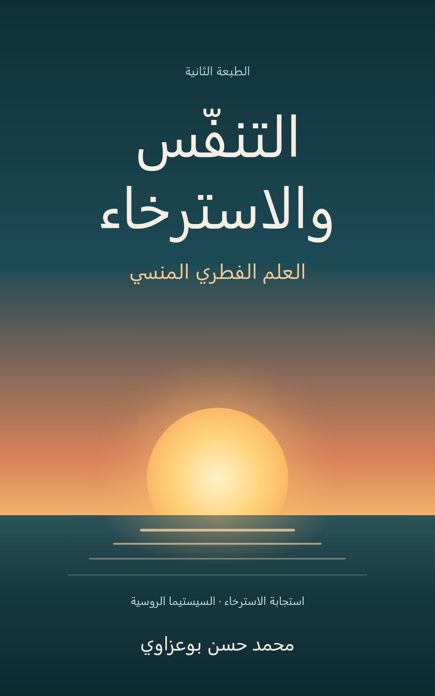

التنفّس والاسترخاء: العلم الفطري المنسي
الطبعة الثانية، 2026
مترجم عن الإنجليزية (Breathing and Relaxation: The Lost Innate Science)
© 2026 محمد حسن بوعزاوي. جميع الحقوق محفوظة. لا يجوز نسخ أي جزء من هذا الكتاب أو توزيعه دون إذن كتابي من المؤلف، باستثناء الاقتباسات القصيرة في المراجعات.
تنبيه صحي. هذا الكتاب لأغراض تثقيفية فقط. وهو ليس استشارة طبية ولا يغني عن التشخيص أو العلاج من قِبل مختص صحي مؤهل. الممارسات الواردة فيه مكمّلة للرعاية الطبية ولا تحل محلها أبدًا. استشر طبيبك قبل البدء في تمارين التنفّس أو الاسترخاء إذا كنتِ حاملًا، أو إذا كنت تعاني من مرض في القلب أو الرئتين أو من اضطراب في ضغط الدم أو من حالة عصبية أو نفسية. أوقف أي تمرين يسبب لك دوارًا أو ألمًا أو ضيقًا.
حول الأمثلة. الأشخاص المذكورون في الأمثلة شخصيات مركّبة أُعدّت لأغراض تعليمية، ولا يمثلون مرضى حقيقيين.
في عالم يتحرك بسرعة هائلة، أصبح التوتر جزءًا لا مفر منه من الحياة. فمن ضغوط العمل والعلاقات إلى سيل المعلومات الذي لا ينقطع، كثيرًا ما تعمل أجسادنا وعقولنا بأقصى طاقتها. ويُثقل التوتر المزمن كاهل صحتنا، ويرتبط بطيف واسع من الحالات، من ارتفاع ضغط الدم ومتلازمة القولون العصبي إلى أمراض المناعة الذاتية ومشكلات الصحة النفسية.
لكن ماذا لو وُجدت طريقة بسيطة ومدروسة علميًا لمواجهة آثار التوتر؟ هنا يأتي دور أعمال الدكتور هربرت بنسون. ففي سبعينيات القرن الماضي، وصف هذا الطبيب المختص في أمراض القلب، خريج جامعة هارفارد، ما سمّاه استجابة الاسترخاء: آلية طبيعية فطرية تعاكس استجابة التوتر وتعزز الاسترخاء العميق. وقد أظهرت أبحاثه أن ممارسات مثل التأمل والدعاء والتنفّس المنضبط يمكن أن تُحدث هذه الاستجابة، مع آثار قابلة للقياس على الجسم.
وفي قلب استجابة الاسترخاء يكمن التنفّس. فالتنفّس وظيفة فريدة لأنه تلقائي وإرادي في آنٍ واحد. وحين نغيّر طريقة تنفّسنا بوعي، يمكننا التأثير في جهازنا العصبي والانتقال من استجابة الكرّ أو الفرّ إلى حالة من الهدوء والتوازن. وهذه الصلة بين النَّفَس والاسترخاء محورية في كثير من الممارسات التقليدية، ومنها اليوغا والتاي تشي وفن القتال الروسي السيستيما.
السيستيما، وتعني «النظام»، منهج شامل للحركة والتنفّس والاسترخاء. نشأ في روسيا، ويجعل التنفّس الطبيعي الخالي من الجهد أساسًا للصلابة الجسدية والنفسية. وتهدف تقنياته إلى تخفيف التوتر العضلي وشحذ التركيز والحفاظ على الهدوء حتى في أشد المواقف ضغطًا.
يستكشف هذا الكتاب العلم الكامن وراء استجابة الاسترخاء وفن التنفّس في السيستيما. ويقدّم أدوات عملية لتقوية ضبط النفس وتحسين العافية ودعم المصابين بالأمراض المزمنة. وسواء أردت التحكم في توترك أو دعم صحتك أو العيش بتوازن أكبر، فإن الممارسات الواردة هنا يمكن أن تساعدك على الاستفادة من قوة الهدوء. ويُختتم الكتاب بخطة للبدء في 7 أيام لتتمكن من الممارسة ابتداءً من اليوم.
ماذا يحدث بالضبط داخل أجسادنا حين نتعرض للتوتر؟ لفهم ذلك، علينا أن ننظر في فسيولوجيا التوتر، وبخاصة في استجابة الكرّ أو الفرّ، وهي آلية تطورت لتساعدنا على النجاة في مواجهة الخطر.
استجابة الكرّ أو الفرّ رد فعل فسيولوجي تلقائي تجاه تهديد متصوَّر، سواء كان جسديًا أو عاطفيًا أو نفسيًا. ويقودها الجهاز العصبي الودّي، وهو فرع من الجهاز العصبي الذاتي يهيّئ الجسم لمواجهة الخطر أو الهروب منه. فحين يدرك الدماغ تهديدًا، يرسل إشارة إنذار إلى منطقة تحت المهاد، فتنشّط الجهاز العصبي الودّي.
ويطلق هذا التنشيط سلسلة من التغيرات الهرمونية، أبرزها إفراز الأدرينالين (الإبينفرين) والكورتيزول من الغدتين الكظريتين. فالأدرينالين يسرّع ضربات القلب ويرفع ضغط الدم ويزيد الطاقة المتاحة بتحفيز تحويل الغليكوجين إلى غلوكوز. أما الكورتيزول، الذي يُسمّى غالبًا «هرمون التوتر»، فيزيد توافر الغلوكوز ويثبّط مؤقتًا الوظائف غير الضرورية في لحظة الخطر، مثل الهضم وجزء من الاستجابة المناعية.
على المدى القصير، تكون استجابة الكرّ أو الفرّ مفيدة جدًا، إذ تشحذ حواسنا وتزيد قوتنا وسرعتنا وتهيّئنا لمواجهة التهديدات المباشرة. لكن المشكلات تظهر حين تُستثار هذه الاستجابة كثيرًا أو لفترات طويلة. فالتوتر المزمن، أي التنشيط المستمر لاستجابة الكرّ أو الفرّ، قد يترك آثارًا دائمة على الجسم.
وحين يغمر الجسم بهرمونات التوتر مرة بعد مرة، قد تتضرر الصحة. فالتوتر المستمر يرتبط بارتفاع ضغط الدم الذي يُجهد الجهاز القلبي الوعائي. كما يرتبط باضطرابات هضمية مثل متلازمة القولون العصبي، وقد يجعل الخللُ الطويل في الجهاز المناعي الجسمَ أكثر عرضة للعدوى، وقد يفاقم أمراض المناعة الذاتية التي يهاجم فيها الجهاز المناعي أنسجة الجسم نفسه.
استجابة الكرّ أو الفرّ ليست هرمونية فحسب، بل تشارك فيها أيضًا بنى أساسية في الدماغ. فاللوزة الدماغية، وهي مجموعة من النوى على شكل لوزة تقع في عمق الدماغ، تؤدي دورًا حاسمًا في معالجة المشاعر، ولا سيما الخوف. وحين ترصد تهديدًا، ترسل إشارة إلى منطقة تحت المهاد التي تنشّط الجهاز العصبي الودّي.
أما القشرة الجبهية الأمامية، وهي الجزء المسؤول عن اتخاذ القرار والتفكير المنطقي، فتساعد على تعديل هذه الاستجابة. ففي الوضع المثالي، تنظّم عمل اللوزة الدماغية وتتيح لنا تقدير ما إذا كان التهديد حقيقيًا. غير أن هذا التنظيم قد يضعف تحت وطأة التوتر المزمن، فتصبح ردود فعلنا تجاه التوتر مبالغًا فيها.
يُنشئ التوتر المزمن حلقة يصعب كسرها. فالأبحاث تشير إلى أن التوتر الطويل قد يؤثر في بنية الدماغ ووظائفه، ومنها الحُصين، وهو منطقة تشارك في الذاكرة وتنظيم المشاعر. وهذا قد يجعل تنظيم المشاعر أصعب، مما يغذّي بدوره استجابة التوتر.
كما قد يشجع التوتر المزمن على سلوكيات غير مفيدة، مثل الإفراط في الأكل وتعاطي المواد والانعزال عن الآخرين. وهذه السلوكيات تخلق مصادر جديدة للتوتر وتُبقي الحلقة مستمرة.
فهم فسيولوجيا التوتر هو الخطوة الأولى لكسر هذه الحلقة. وفي الفصل التالي، سنتعرف على اكتشاف الدكتور هربرت بنسون لاستجابة الاسترخاء، وهي النقيض البيولوجي لاستجابة التوتر. فبتعلّم تنشيطها، يمكننا مواجهة الآثار الضارة للتوتر المزمن ودعم عافيتنا عمومًا.
في أواخر ستينيات القرن الماضي ومطلع سبعينياته، درس الدكتور هربرت بنسون، الطبيب المختص في أمراض القلب والباحث في كلية الطب بجامعة هارفارد، الآثار الفسيولوجية للتأمل. فاكتشف استجابة طبيعية فطرية في الجسم سمّاها استجابة الاسترخاء، وهي النقيض البيولوجي لاستجابة الكرّ أو الفرّ (Benson, Beary & Carol, 1974). وقد قدّمت أعماله إطارًا علميًا لفهم الاسترخاء، وأدوات عملية للاستفادة منه.
تهيّئ استجابة الكرّ أو الفرّ، التي يقودها الجهاز العصبي الودّي، الجسمَ لمواجهة التهديدات المباشرة برفع معدل ضربات القلب وضغط الدم وهرمونات التوتر. أما استجابة الاسترخاء فترتبط بالجهاز العصبي اللاودّي الذي يعزز الهدوء والتعافي. وعند تنشيطها، تتباطأ ضربات القلب والتنفّس، وينخفض ضغط الدم، وترتخي العضلات، ويقل استهلاك الجسم للأكسجين.
وقد بيّن الدكتور بنسون أن استجابة الاسترخاء ليست مجرد غياب للتوتر، بل حالة فسيولوجية فاعلة يمكن استحضارها عن قصد. وأثبت بذلك أن الإنسان قادر على مواجهة آثار التوتر المزمن بشكل فاعل من خلال ممارسات محددة.
وصف الدكتور بنسون عناصر بسيطة تساعد على استحضار استجابة الاسترخاء. ويمكن تطبيقها من خلال ممارسات كثيرة، منها التأمل والدعاء واليوغا، بل وحتى الأنشطة المتكررة كالركض الخفيف أو الحياكة. وفي أعماله اللاحقة، شدّد على أن العنصرين الأولين هما الخطوتان الأساسيتان:
تلت أعمالَ الدكتور بنسون عقودٌ من الدراسات حول ممارسات الاسترخاء والتنفّس. ومن أبرز الآثار التي رصدتها:
أصبحت استجابة الاسترخاء اليوم أداة معترفًا بها على نطاق واسع للتعامل مع التوتر. وتُستعمل مقاربات قريبة منها في برامج مثل الحد من التوتر القائم على اليقظة الذهنية (MBSR) والعلاج المعرفي السلوكي، وكذلك في المؤسسات الصحية لدعم المصابين بالأمراض المزمنة. وهي متاحة للجميع مهما كان العمر أو اللياقة البدنية أو الخلفية، ولا تتطلب أي أدوات خاصة.
في الفصل التالي، سنتعرف على الدور المحوري للتنفّس في تنشيط استجابة الاسترخاء.
التنفّس من أبسط الأدوات وأقواها التي نملكها للتأثير في حالتنا الجسدية والنفسية. فهو عملية تلقائية يتحكم فيها جذع الدماغ، ويمكن مع ذلك تنظيمها بوعي. وهذه الطبيعة المزدوجة تجعله بوابة إلى استجابة الاسترخاء.
ينظّم الجهاز العصبي الذاتي وظائف الجسم اللاإرادية، مثل معدل ضربات القلب والهضم وسرعة التنفّس. وله فرعان رئيسيان: الجهاز العصبي الودّي الذي يتحكم في استجابة الكرّ أو الفرّ، والجهاز العصبي اللاودّي الذي يعزز الراحة والاسترخاء والتعافي. والتنفّس المنضبط من أكثر الطرق مباشرة لتنشيط الفرع اللاودّي.
فالتنفّس البطيء، خاصة مع زفير أطول، ينشّط العصب المبهم، وهو العصب الرئيسي في الجهاز اللاودّي. ويعمل العصب المبهم كطريق اتصال بين الدماغ والجسم، فيساعد على إبطاء القلب ويعزز الاسترخاء. ولهذا يكون التنفّس الحجابي، الذي يصل فيه الهواء عميقًا إلى البطن، فعالًا جدًا في تخفيف التوتر.
وتُظهر الأبحاث أن التنفّس البطيء، بنحو ست أنفاس في الدقيقة، يزيد من تقلّب معدل ضربات القلب، وهو مؤشر على قدرة الجسم على التكيف مع التوتر (Russo, Santarelli & O’Rourke, 2017; Zaccaro et al., 2018). ويرتبط ارتفاع هذا المؤشر بتنظيم أفضل للمشاعر وبصحة أفضل للقلب والأوعية.
كثيرًا ما يوصف النَّفَس بأنه جسر بين الجسد والعقل. فالتنفّس البطيء المنتظم يرسل إلى الدماغ إشارات أمان، والانتباه إلى النَّفَس يعيدنا إلى اللحظة الحاضرة، فيقطع دوامة الاجترار والقلق التي ترافق التوتر غالبًا. ومع الوقت، يساعدنا هذا الوعي بالنَّفَس على ملاحظة أفكارنا ومشاعرنا دون أن تطغى علينا.
والعلاقة تسير في الاتجاهين. فحين نكون قلقين أو غاضبين، يصبح تنفّسنا سطحيًا وسريعًا؛ وحين نكون هادئين، يصبح بطيئًا وعميقًا. وبإدراك هذه الصلة، يمكننا استعمال النَّفَس لتنظيم مشاعرنا وخلق حلقة إيجابية من الهدوء.
تشير الدراسات حول ممارسات مثل التنفّس الحجابي والتنفّس البطيء المنتظم إلى أنها قد:
في الجزء التالي من هذا الكتاب، سنستكشف منهج السيستيما الروسية في التنفّس والاسترخاء، بتقنياته وفلسفته الخاصة لبلوغ الهدوء والصلابة النفسية.
كثيرًا ما توصف السيستيما بأنها فن قتالي روسي «للقتال والشفاء». وهي ممارسة شاملة تركز على الحركة الطبيعية والاسترخاء والتحكم في النَّفَس. وعلى خلاف كثير من فنون القتال القائمة على تقنيات صارمة وأشكال ثابتة، فإن السيستيما مرنة وقابلة للتكيف، صُممت لتعمل مع غرائز الجسم وإيقاعاته الطبيعية.
تستمد السيستيما جذورها من التقاليد القتالية الروسية ومن تدريبات طُوّرت لوحدات عسكرية وقوات خاصة كانت تحتاج إلى منهج عملي للمواقف شديدة التوتر وغير المتوقعة. وفي صيغتها الحديثة، دُرّست وانتشرت منذ تسعينيات القرن الماضي، لا سيما على يد ميخائيل ريابكو وفلاديمير فاسيليف، ثم انتشرت في أنحاء العالم. وإلى جانب الدفاع عن النفس، يقدّمها معلموها أسلوبَ حياة يجمع بين التدريب البدني والتنفّس والاسترخاء والوعي.
وتقوم السيستيما في جوهرها على أربعة مبادئ تُسمّى غالبًا الركائز الأربع: التنفّس، والاسترخاء، والقوام، والحركة. وهي مترابطة وتشكّل أساس كل ممارسة في السيستيما. وترى فلسفتها أن القوة الحقيقية تنبع من الانسجام مع الذات ومع المحيط: فبتنمية الوعي والمرونة والهدوء، يتعلم الممارسون مواجهة التحديات بسلاسة وفعالية، في القتال أو في الحياة اليومية أو تحت الضغط.
مع أن السيستيما نشأت من القتال، فإن مبادئها تنطبق على الحياة اليومية. فتركيزها على التنفّس والاسترخاء والقوام والحركة يجعلها أداة فعالة للتعامل مع التوتر ودعم الصحة الجسدية وبناء الصلابة النفسية.
وترتكز السيستيما أيضًا على الوعي بالذات. فيتعلم الممارسون الإصغاء إلى أجسادهم، والتعرف على التوتر والضغط، والتخلص منهما بالنَّفَس والحركة. ويمتد هذا الوعي إلى المشاعر وردود الفعل، مما يجعل السيستيما ليست فن قتال فحسب، بل طريقًا للنمو الشخصي أيضًا.
يمارس السيستيما اليوم أناس من كل الفئات: ممارسو فنون القتال والرياضيون والمختصون الصحيون، وأشخاص يبحثون ببساطة عن الراحة من التوتر. وقد يناسب أسلوبها اللطيف الواعي في الحركة من يتعافون من إصابة أو يعيشون مع ألم مزمن، شرط احترام حدود الجسم واستشارة الطبيب عند الحاجة. وفي المهن شديدة التوتر، كالأمن والجيش وخدمات الطوارئ، يساعد تركيزها على التنفّس والاسترخاء على البقاء هادئًا واتخاذ قرارات أفضل تحت الضغط.
التنفّس أساس السيستيما، والجسر بين الجسد والعقل والمشاعر. وهو ليس عملية فسيولوجية فحسب، بل أداة لتنمية الهدوء والتركيز والصلابة النفسية. يستعرض هذا الفصل التنفّس الأنفي والحجابي، ويقدّم أهم تقنيات السيستيما، ويشرح كيف تخفف التوتر وتحسّن التركيز.
1. سلّم التنفّس أثناء المشي. امشِ بخطى عادية. استنشق من أنفك خلال خطوة واحدة وازفر من فمك خلال خطوة واحدة. ثم استنشق خلال خطوتين وازفر خلال خطوتين، ثم ثلاث وثلاث، حتى حدّ مريح (مثلًا 8)، ثم انزل تدريجيًا حتى خطوة واحدة. وإذا ضاق نَفَسك، فعُد ببساطة إلى درجة أدنى.
2. التنفّس المتقطع السريع. بعد جهد، أو عند الشعور بألم أو بتصاعد التوتر، تنفّس بدفعات قصيرة وسريعة: شهقات قصيرة من الأنف وزفرات قصيرة من بين شفتين مضمومتين قليلًا، كأنك تطفئ شمعة. واصل حتى يهدأ تنفّسك ونبضك، ثم عُد إلى التنفّس الأنفي البطيء.
3. حركة يقودها النَّفَس. اختر حركة بسيطة، مثل القرفصاء البطيئة. دع النَّفَس يقود: ابدأ الشهيق ثم ابدأ النزول؛ ابدأ الزفير ثم انهض. اجعل الحركة بطيئة بما يكفي كي لا يُجهَد النَّفَس أبدًا. فالهدف ليس القوة، بل البقاء مسترخيًا أثناء الحركة.
الاسترخاء مبدأ محوري في السيستيما، يعكس الاعتقاد بأن القوة الحقيقية تأتي من البقاء هادئًا ومرنًا في مواجهة التحديات. وتحرر ممارسات الاسترخاء في السيستيما التوتر الجسدي، وتنمّي الوعي، وتعزز إحساسًا عميقًا بالسلام الداخلي.
يحرر الاسترخاء العضلي التدريجي التوتر من الجسم بطريقة منهجية. وفي السيستيما، يُقرن غالبًا بالتنفّس:
يزيد هذا التمرين من الوعي بالجسد، فيسهل التعرف على التوتر وتحريره قبل أن يصبح مزمنًا. وتجنّب شدّ أي منطقة مصابة أو مؤلمة.
اليقظة الذهنية هي الانتباه إلى اللحظة الحاضرة دون إصدار أحكام؛ والوعي هو القدرة على إدراك المحيط الداخلي والخارجي. وتنمّي السيستيما كليهما من خلال:
السيستيما أكثر من فن قتالي: إنها طريقة للعيش بوعي وصلابة وسلاسة. وفي الجزء التالي، سنرى كيف نجمع ممارساتها مع استجابة الاسترخاء لمقاربة شاملة للعافية.
في عالمنا السريع اليوم، أصبحت الصلابة النفسية مهارة أساسية. فالقدرة على تنظيم المشاعر وإدارة التوتر وضبط النفس لها أثر حقيقي على الصحة النفسية والجسدية. وبالجمع بين استجابة الاسترخاء وتقنيات التنفّس والاسترخاء في السيستيما، يمكنك بناء أدوات قوية للصلابة النفسية.
الأمثلة التالية شخصيات مركّبة أُعدّت لتوضيح كيفية استعمال هذه الممارسات، وليست حالات لمرضى حقيقيين.
الوضع. يوسف، 35 عامًا، تنتابه نوبات غضب متكررة في العمل والبيت تضرّ بعلاقاته.
الممارسة. يمارس استجابة الاسترخاء كل صباح بكلمة بسيطة، ويستعمل التنفّس المستمر في المواقف المتوترة.
ما الذي يتغير. مع الوقت، يتعلم ملاحظة العلامات الأولى للغضب، كتسارع القلب وتشنّج العضلات، وتهدئة نفسه بالنَّفَس قبل أن تتصاعد مشاعره.
الوضع. مريم، 28 عامًا، طالبة دراسات عليا، تعيش قلقًا مستمرًا يُربك دراستها ونومها.
الممارسة. تمارس التنفّس الحجابي والتنفّس الموجي من 10 إلى 15 دقيقة يوميًا، وتكرر في سرّها كلمة «هدوء».
ما الذي يتغير. بعد بضعة أسابيع، تشعر بضغط أقل، وتستعمل التنفّس الموجي للحفاظ على تركيزها في الامتحانات، وتنام بشكل أفضل.
الوضع. داود، 42 عامًا، رجل إطفاء، يتعرض لنوبات هلع أثناء التدخلات شديدة التوتر.
الممارسة. يتدرب على تنفّس السيستيما، بالتنفّس المستمر وحبس النَّفَس القصير المنضبط أثناء التدريب، ويمارس استجابة الاسترخاء خارج أوقات العمل.
ما الذي يتغير. يشعر بمزيد من التماسك في حالات الطوارئ ويتخذ قرارات أوضح تحت الضغط.
قد تدعم ممارسات التنفّس العافية النفسية، لكنها لا تغني عن الرعاية المتخصصة. إذا كان الغضب أو القلق أو الخوف أو انخفاض المزاج شديدًا أو مستمرًا أو يؤثر في حياتك اليومية، فتحدث إلى طبيب أو مختص في الصحة النفسية.
كثيرًا ما تتفاقم الأمراض المزمنة، مثل داء الأمعاء الالتهابي والألم العضلي الليفي وأمراض القلب والأوعية، بفعل التوتر. فالتوتر يزيد الأعراض سوءًا، والأعراض بدورها تزيد التوتر. وعند استعمالهما إلى جانب العلاج الطبي، يمكن لاستجابة الاسترخاء وتنفّس السيستيما أن يساعدا على تحسين جودة الحياة.
لا توقف أي علاج ولا تغيّره دون استشارة طبيبك. وأخبر فريقك الطبي بالممارسات التي تستعملها، خاصة إذا كنت تعاني من مرض في القلب أو الرئتين.
إدخال استجابة الاسترخاء والسيستيما في روتينك اليومي قد يغيّر طريقة عيشك للتوتر. يقدّم هذا الفصل منهجًا بسيطًا خطوة بخطوة.
| إذا كنت… | جرّب ما يلي |
|---|---|
| مهنيًا كثير الانشغال | دقيقة أو دقيقتان من التنفّس الحجابي على مكتبك؛ والتنفّس الموجي أثناء المشي بين الاجتماعات. |
| أبًا أو أمًّا | تنفّس واعٍ أثناء قيلولة طفلك أو لعبه؛ وألعاب تنفّس بسيطة مع الأطفال. |
| كبيرًا في السن | حركات لطيفة وتنفّس يناسبان قدرتك على الحركة؛ والتخيّل الموجَّه أو الاسترخاء العضلي التدريجي للراحة وتخفيف الألم. |
| طالبًا | تنفّس 4-7-8 قبل الامتحانات أو العروض؛ وبضع دقائق من تنفّس السيستيما في استراحات المذاكرة. |
يواجه الرياضيون وفرق الإسعاف والعسكريون مواقف تتطلب أقصى أداء جسدي وذهني. فالقدرة على إدارة التوتر والتعافي بسرعة والبقاء مركّزًا قد تصنع الفرق بين النجاح والفشل، وأحيانًا بين الحياة والموت.
يحظى الترابط بين العقل والجسد باعتراف متزايد في الطب. ومع تقدم الأبحاث، تكتسب ممارسات التنفّس والاسترخاء مكانة متنامية إلى جانب الرعاية التقليدية.
استكشفنا في هذا الكتاب أثر استجابة الاسترخاء وتنفّس السيستيما على العافية الجسدية والذهنية والنفسية: من فسيولوجيا التوتر إلى المهن شديدة الضغط والعيش مع مرض مزمن. فبتنشيط الجهاز العصبي اللاودّي وتخفيف التوتر، تساعدنا هذه الممارسات على المشاركة الفاعلة في صحتنا ومواجهة تحديات الحياة بصلابة.
تبدأ الرحلة نحو حياة أكثر صحة وهدوءًا وامتلاءً بنَفَس واحد. وإليك كيف تخطو الخطوة الأولى:
يَعِد دمج هذه الممارسات في الطب والتعليم والصحة المجتمعية بالكثير: عالم يملك فيه الناس وسائل العناية بصحتهم، ويُعالَج فيه التوتر مبكرًا، وتكون فيه العافية أولوية للجميع. إن القدرة على تغيير حياتك موجودة في داخلك. وهي تبدأ بنَفَس، ولحظة سكون، والتزام بالعناية بجسدك وعقلك وروحك. والرحلة تبدأ الآن.
تكفي عشر إلى خمس عشرة دقيقة يوميًا للبدء. ضع علامة على كل يوم أنجزته: فالانتظام أهم من المدة.
| اليوم | الصباح (من 5 إلى 10 دقائق) | خلال اليوم | المساء (5 دقائق) |
|---|---|---|---|
| 1 | التنفّس الحجابي، 5 دقائق | 3 أنفاس بطيئة قبل كل وجبة | تنفّس 4-7-8، 4 دورات |
| 2 | التنفّس الحجابي، 7 دقائق | التنفّس المستمر أثناء المشي | مسح الجسد |
| 3 | استجابة الاسترخاء مع كلمة، 10 دقائق | دقيقة من التنفّس المربّع قبل مهمة | تنفّس 4-7-8 |
| 4 | سلّم التنفّس أثناء المشي، حتى 6 خطوات | وقفة واعية: لاحظ التوتر وأرخِه | الاسترخاء العضلي التدريجي |
| 5 | استجابة الاسترخاء، 10 دقائق | التنفّس الموجي أثناء جهد بسيط (صعود الدرج، حمل شيء) | الامتنان: 3 أشياء |
| 6 | قرفصاء يقودها النَّفَس، مجموعتان من 5 تكرارات بطيئة | التنفّس المتقطع السريع بعد جهد | التخيّل الموجَّه مع تنفّس بطيء |
| 7 | ممارستك المفضلة، من 10 إلى 15 دقيقة | دوّن اللحظات التي احتجت فيها إلى نَفَسك أكثر | خطّط لممارستك في الأسبوع التالي |
بعد أسبوع، احتفظ بما نجح معك أكثر ومارسه يوميًا. ويلاحظ كثيرون الفرق بعد أسبوعين إلى أربعة أسابيع من الممارسة المنتظمة.
المراجع مذكورة بالإنجليزية، وهي اللغة التي نُشرت بها الأعمال المذكورة.
كتب محمد حسن بوعزاوي هذا الكتاب ليشارك أدوات بسيطة مستنيرة بالعلم، يمكن لأي شخص استعمالها ليتنفّس بشكل أفضل ويتحكم في توتره ويعيش بهدوء أكبر. ويجمع الكتاب بين الأبحاث حول استجابة الاسترخاء والحكمة العملية للسيستيما.
تجد على موقع الكتاب تمارين موجّهة وتحديثات والطبعات الأخرى من هذا الكتاب بلغات مختلفة. وأسئلتك وملاحظاتك مرحّب بها دائمًا عبر صفحة التواصل.